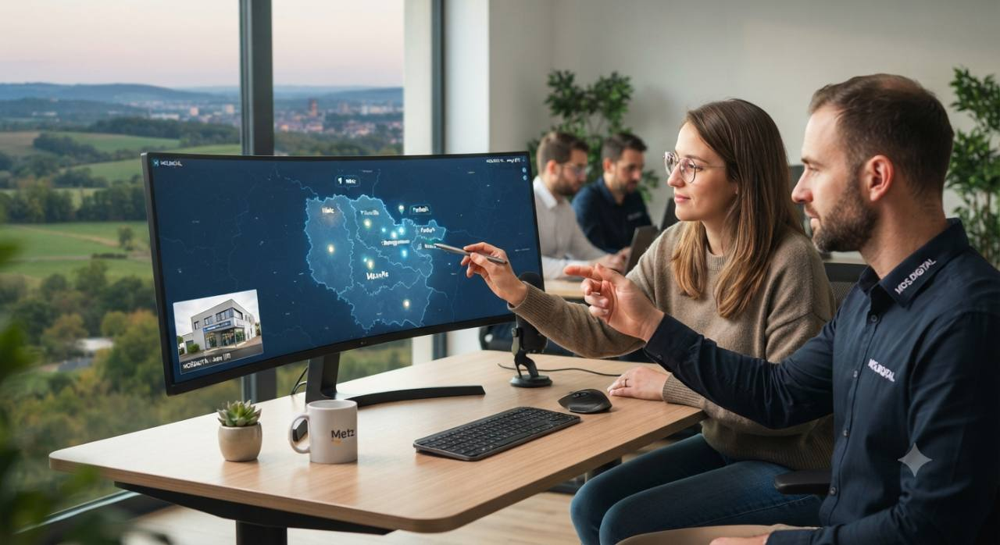

🧩
Kreatioun an Integratioun
Mir maachen aus Ären Inhalter an Ärer Identitéit kohärent, séier a mobil Säiten.
Vu Jussy an der Musel aus begleet AQUA-R-WEB vun Distanz Handwierker, Independanten a KMUen aus dem Grand Est, fir professionell Websäiten ze kreéieren, iwwerzeschaffen an z'integréieren, mat Fokus op Visibilitéit a Kontakt.

D'Kreatioun vun Distanz erlaabt et, effikass an der ganzer Regioun ze schaffen. D'Gespréicher bleiwe strukturéiert, d'Validatioune sinn einfach an all Etapp gëtt ouni Jargon erkläert.
Mir maachen aus Ären Inhalter an Ärer Identitéit kohärent, séier a mobil Säiten.
Eng al Websäit ka nei organiséiert ginn, fir d'Offer ze klären, den Image ze moderniséieren a méi Kontakter ze kréien.
SEO baut op enger propperer Architektur, nëtzlechen Inhalter an de Gebidder op, déi Dir wierklech ofdeckt.
Är Websäit muss Är Aktivitéit erëmspigelen an Är Entwécklung ënnerstëtzen. Mir setzen op e Konzept, dat einfach ze verstoen ass, mat gutt strukturéierten Inhalter, siichtbare Beweiser an Opruff zur Aktioun, déi zu Ärem Verkafszyklus passen.
E Betrib, deen zu Metz, Nancy an Diddenuewen present ass, ka verschidde lokal Inhalter brauchen. Mir vermeiden Kopien, bei deenen nëmmen den Numm vun der Stad geännert gëtt: all Säit muss op e reelle Besoin, eng Clientèle oder eng Offer äntweren.
Aktivitéit, Positionéierung, Inhalter an Ziler.
Architektur, Maquette a Benotzerparcours.
Entwécklung, Integratioun, mobil an SEO.
Online stellen, Indexéierung a Verbesserungen.
Mir schaffe vun Distanz mat de Betriber aus der Regioun, ouni ze behaapten, datt mir an all Stad e Büro hunn.
Jo. D'Konzept an d'Validatioune kënne vun Distanz gemaach ginn. AQUA-R-WEB bleift zu Jussy an der Musel.
Mir maachen haaptsächlech Firmewebsäiten, Iwweraarbechtungen a Web-Integratioune fir Handwierker, Independanten, Veräiner a KMUen.
Jo, wann Äre Betrib dës Gebidder wierklech ofdeckt an all Säit e spezifeschen an nëtzlechen Inhalt bréngen kann.
Kritt e klore Plang, fir Är Websäit ze kreéieren oder ze moderniséieren.